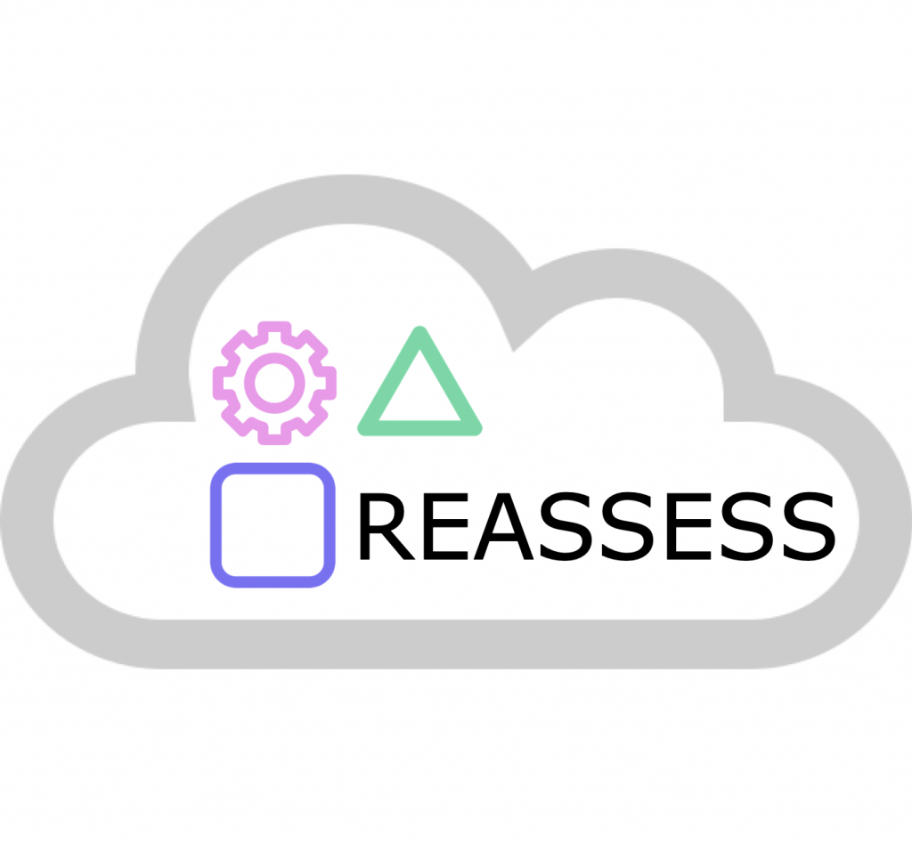

Projects
-

The project aims to advance the current state of serious games (SGs) being used in various contexts such as education and health. The goal is to develop and prototype the necessary technologies to facilitate the deployment of an infrastructure that supports Game-based Assessments as a Service (GBAaaS) in an interoperable manner between different games. The project aims to achieve this by first defining a common ontological model that can unify game-based assessments, creating interoperability between games and addressing current heterogeneity issues. Second, by creating an infrastructure that can process large amounts of data and providing simple access through an application interface (API). Finally, by reviewing GBA metrics in the area and ensuring that they are implementable and replicable in the architecture, and defining new models and metrics that use more advanced techniques than currently used. The result of this infrastructure could be used transparently by the end-user (teachers, students, administrators), allowing for the reuse of GBA metrics between different games and enabling the exploitation of large amounts of data for analysis and visualization using a series of advanced models developed.
-
EU-GUARDIAN aims at creating a cutting-edge, accurate and reliable AI-based solution that operates and automates larger parts of incident management and cyber defence processes. Focusing on the ability to detect, mitigate and respond to security challenges semi-automatically or automatically; support analysts and decision-makers at all levels; and contribute to enhancing cyber situational awareness, military infrastructure resilience and protection against advanced cyber threats. On these grounds, EU-GUARDIAN will make progress on understanding the relevant actors and the threat environment where AI-based cyber defence systems will interact with; creating AI-based techniques for detecting and understanding adversarial activity, as well as for building knowledge about own protected ICT systems; shaping AI-based information collection and storage systems that can dynamically adapt their strategy to the situation perceived; and building AI-based decision systems which are risk and impact aware. All components will follow the key requirements of human agency and oversight; technical robustness; privacy; algorithmic transparency; diversity and accountability; and proof-of-concept feasibility analysis will support each component. The multidisciplinary and highly specialised Consortium will present the results of EU-GUARDIAN, which will facilitate the tedious task of analysing large amounts of data; will improve cyber operational capability; drive a reduction in costs; and above all, they will contribute to EU cyber defence posture and to the laying of the foundations for prompting the EU autonomy in development and capacitation of AI-based resources.
-

LAGA is part of a bigger project that is taking place at the MIT Playful Journey Lab on the design and implementation of game-based assessment in K12 schools. In this regard, LAGA entails the design of the data infrastructure and the development of the learning analytics and assessment machinery models to perform such game-based assessment.